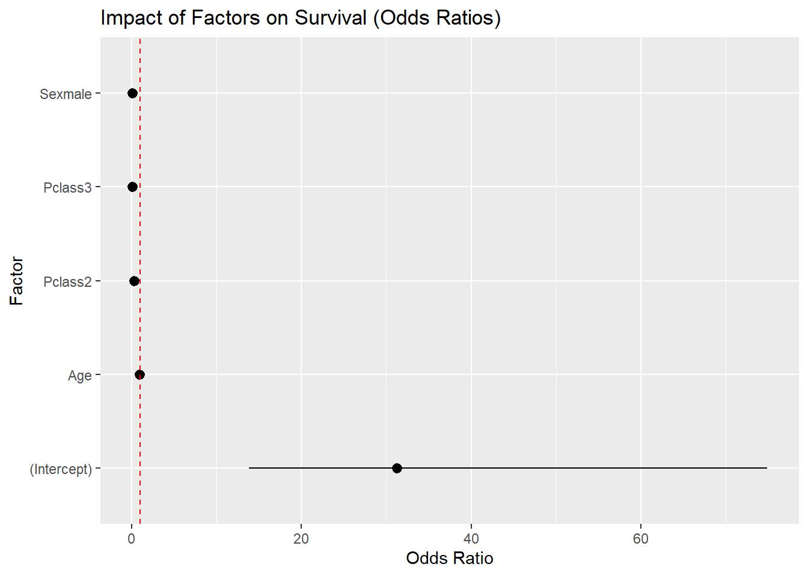
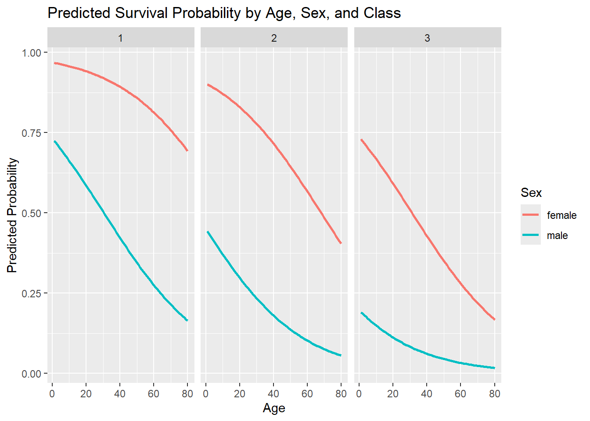
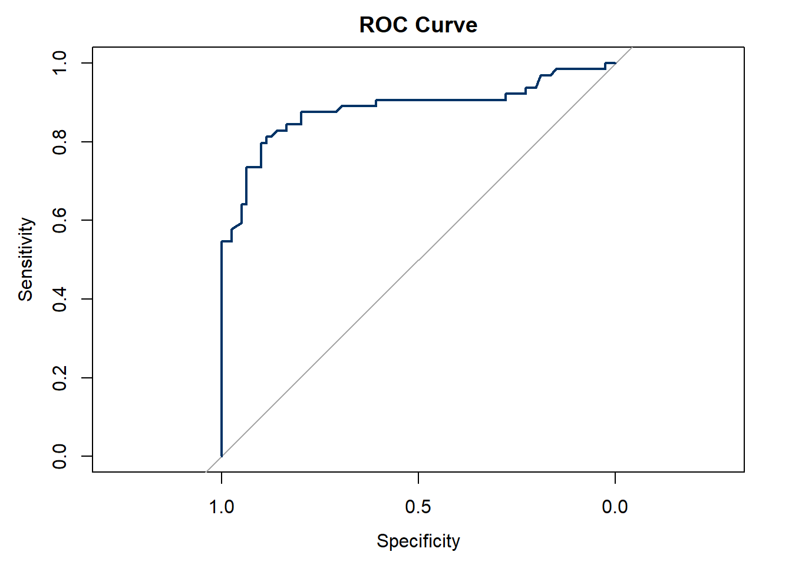

Call:
glm(formula = Survived ~ Pclass + Sex + Age, family = "binomial",
data = train)
Coefficients:
Estimate Std. Error z value Pr(>|z|)
(Intercept) 3.442279 0.430518 7.996 1.29e-15 ***
Pclass2 -1.200662 0.309446 -3.880 0.000104 ***
Pclass3 -2.414733 0.303120 -7.966 1.64e-15 ***
Sexmale -2.439533 0.226784 -10.757 < 2e-16 ***
Age -0.032870 0.008276 -3.972 7.13e-05 ***
---
Signif. codes: 0 '***' 0.001 '**' 0.01 '*' 0.05 '.' 0.1 ' ' 1
(Dispersion parameter for binomial family taken to be 1)
Null deviance: 766.59 on 570 degrees of freedom
Residual deviance: 530.14 on 566 degrees of freedom
AIC: 540.14
Number of Fisher Scoring iterations: 4The logistic regression model estimates survival probability on the Titanic using passenger class, sex, and age. All predictors are highly significant (p < 0.001). Being in second or third class, being male, and being older are all associated with lower survival odds. The AIC (540.14) suggests a good model fit compared to the null model.
\[ \text{logit}\big(P(\text{Survived}=1)\big) = \ln \left( \frac{P(\text{Survived}=1)}{1 - P(\text{Survived}=1)} \right) = 3.442 - 1.201 \cdot \mathbf{1}_{\{\text{Pclass}=2\}} - 2.415 \cdot \mathbf{1}_{\{\text{Pclass}=3\}} - 2.440 \cdot \mathbf{1}_{\{\text{Sex}=\text{male}\}} - 0.0329 \cdot \text{Age} \]
Odds Ratios and Factor Impact
# A tibble: 5 × 7
term estimate std.error statistic p.value conf.low conf.high
<chr> <dbl> <dbl> <dbl> <dbl> <dbl> <dbl>
1 (Intercept) 31.3 0.431 8.00 1.29e-15 13.8 74.9
2 Pclass2 0.301 0.309 -3.88 1.04e- 4 0.163 0.548
3 Pclass3 0.0894 0.303 -7.97 1.64e-15 0.0485 0.160
4 Sexmale 0.0872 0.227 -10.8 5.49e-27 0.0553 0.135
5 Age 0.968 0.00828 -3.97 7.13e- 5 0.952 0.983
The odds ratios highlight the magnitude of each effect. Compared to first-class passengers, those in second class had only about 30% the odds of survival, while those in third class had less than 10%. Males had dramatically reduced odds of survival (odds ratio ≈ 0.09). Age had a smaller but still meaningful effect: each additional year decreased survival odds by about 3%. The factor impact plot clearly shows that sex and class dominate survival outcomes, with age playing a secondary role.
Predicted Survival Probabilities

The prediction curves show strong interactions between sex, age, and class. Across all classes, women had much higher predicted survival probabilities than men. Younger passengers had better chances, but the survival gap between males and females was consistent: even older women in first class had better odds than younger men in lower classes. This visual confirms the historical accounts of “women and children first” and the importance of class status.
Model Evaluation
Actual
Predicted Died Survived
Died 71 17
Survived 8 47[1] 0.8251748The model correctly classified most passengers: 71 who died and 47 who survived were predicted correctly, with relatively few misclassifications (17 false negatives and 8 false positives). The overall accuracy was about 82.5%, indicating strong predictive power for a simple model.
ROC and AUC Curve

Area under the curve: 0.8836The ROC curve demonstrates that the model discriminates well between survivors and non-survivors. The AUC of 0.88 confirms this performance: far better than random guessing (0.5) and in the range considered “very good.” This means the model reliably ranks passengers by their survival probability, even if classification thresholds shift.